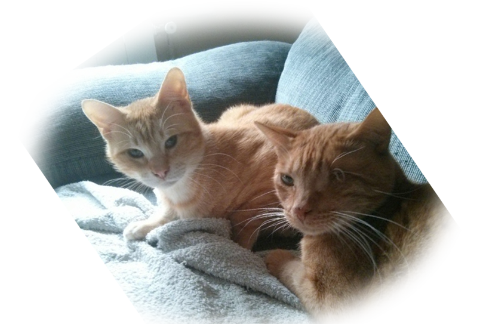

Theming in Drupal 8
«un soplo de aire fresco»
¿Quien soy? ¿De dónde vengo?
Pako Garcia
Vegan Frontend developer at 
@pakmanlh in the internets
¿A todos nos gustan los ponies?
Recomendaciones del cheff:
- 10:30 to 11:30
Render API en Drupal 7 & 8
Jose Luis Bellido - 12:00 to 13:00
Drupal 8 Frontend for Backenders
Lauri Eskola
Cualquier tiempo pasado fue mejor...
¿seguro?
Divitis
Marcado enriquecido tm
sobrecarga css
sobrecarga css
5 classes para cada uno de los campos
El valor relevante
Uso masivo de phptemplate
más de 5000 líneas de PHP en plantillas sin despeinarnos.
y demás lindezas
- Theme functions
- Difícil comprensión para no-expertos
- Poco interés por el CSS
- ...
pero...
drupal 8 está aquí!
...o casi.
Cambios en la capa de theme
Template process layer
…es historia!
Theme functions
…están siendo convertidas a plantillas…
(y en otros formatos).
Solamente quedan 12! http://dgo.to/2348381
Theme suggestion hooks
Drupal 7:
/**
* Implements hook_preprocess_HOOK() for node templates.
*/
function MYTHEME_preprocess_node(&$variables) {
$variables['theme_hook_suggestions'][] = 'node__' . 'my_first_suggestion';
$variables['theme_hook_suggestions'][] = 'node__' . 'my_second_more_specific_suggestion';
}
/**
* Implements hook_theme_suggestions_HOOK_alter() for node templates.
*/
function MYTHEME_theme_suggestions_node_alter(array &$suggestions, array $variables) {
$suggestions[] = 'node__' . 'my_first_suggestion';
$suggestions[] = 'node__' . 'my_second_suggestion';
}
Adiós theme(), hola
render arrays
Drupal 7:
$variables['list'] = theme('item_list', array(
'items' => $items,
));
$variables['list'] = [
'#theme' => 'item_list',
'#items' => $items,
];
Atributos
Todos los atributos del HTML:
<div{{ attributes }}>
Cuidado con el primer espacio en blanco:
<div {{ attributes }}>
Este espacio se sumará quedando un código feo
<div✖{{ attributes }}>
Dividiendo el atributo class
<div class="myclass {{ attributes.class }}"{{ attributes|without('class') }}>Atributos II
Manipulación de Class:
<div{{ attributes.addClass('hola').removeClass('adiós') }}>
Testing:
{% if attributes.hasClass('field-label-inline') %}
{# Realizar algún código personalizado para la etiqueta inline. #}
{% endif %}Atributos III
Establecer un atributo:
<div{{ attributes.setAttribute('id', 'eye-d') }}>
Borrar un atributo:
<div{{ attributes.removeAttribute('id') }}>Imprime lo que quieras, cuando quieras
Drupal 7:
// Ocultamos los comentarios y los links
// para imprimirlos después.
hide($content['comments']);
hide($content['links']);
print render($content);
// Render llama a show() en el elemento.
print render($content['links']);
// Para devolver los enlaces con el contenido.
show($content['links']);
// Imprime el contenido con enlaces pero todavía
// sin comentarios :(
print render($content);
Drupal 8:
{# Imprime el contenido sin comentarios ni enlaces #}
{{ content|without('comments', 'links') }}
{# Imprime solamente los enlaces #}
{{ content.links }}
{# Imprime todo sin los comentarios! #}
{{ content|without('comments') }}
{# Imprime todo YUJU :) #}
{{ content }}
Uy sí, y Twig!
Creo que lo habr√©is notado‚Ķ üòâ
parameters:
twig.config:
debug: true
<!-- THEME DEBUG -->
<!-- THEME HOOK: 'block' -->
<!-- FILE NAME SUGGESTIONS:
* block--bartik-powered.html.twig
* block--system-powered-by-block.html.twig
* block--system.html.twig
x block.html.twig
-->
<!-- BEGIN OUTPUT from 'core/modules/block/templates/block.html.twig' -->
<div class="block block-system contextual-region" id="block-bartik-powered" role="complementary">
<div data-contextual-id="block:block=bartik_powered:"></div>
<div class="content">
<span>Powered by <a href="http://drupal.org">Drupal</a></span>
</div>
</div>
<!-- END OUTPUT from 'core/modules/block/templates/block.html.twig' -->
Drupal 7.33+ también!!
settings.php:$conf['theme_debug'] = TRUE;
<!-- THEME DEBUG -->
<!-- CALL: theme('block') -->
<!-- FILE NAME SUGGESTIONS:
* block--system--powered-by.tpl.php
* block--system.tpl.php
* block--footer.tpl.php
x block.tpl.php
-->
<!-- BEGIN OUTPUT from 'modules/block/block.tpl.php' -->
<div id="block-system-powered-by" class="block block-system">
<div class="content">
<span>Powered by <a href="https://www.drupal.org">Drupal</a></span>
</div>
</div>
<!-- END OUTPUT from 'modules/block/block.tpl.php' -->
Twig magic
{{ sandwich.cheese }}
// Valor de un Array.
$sandwich['cheese'];
// Propiedad de un objeto.
$sandwich->cheese;
// También para el método mágico.
$sandwich->__isset('cheese'); && $sandwich->__get('cheese');
// Para un método de un objeto.
$sandwich->cheese();
// Para un objeto obtenido con la convención get.
$sandwich->getCheese();
// Objeto is convención método.
$sandwich->isCheese();
// Método dinámico.
$sandwich->__call('cheese');
Classy
un nuevo base theme amigo
Theme Stark
HTML + class="foo"
Drupal 8Theme Stark + Classy
HTML + class="foo"
¿Nuestro theme?
Usando solamente Core
{{{ code }} Con Classy
{{{ code }} Classy
Organización por tipos de plantillas
Definir Classy como Basetheme
*.info.ymlbase theme: classyConfigurando un Theme
¿Dónde viven ahora?
[root]/themes/[theme_name]
Archivos de configuración
- *.info.yml
- *.libraries.yml
- *.breakpoints.yml
- *.theme.yml
Gracias!
That's all folks
¿Preguntas?

pako@ymbra.com
@pakmanlh